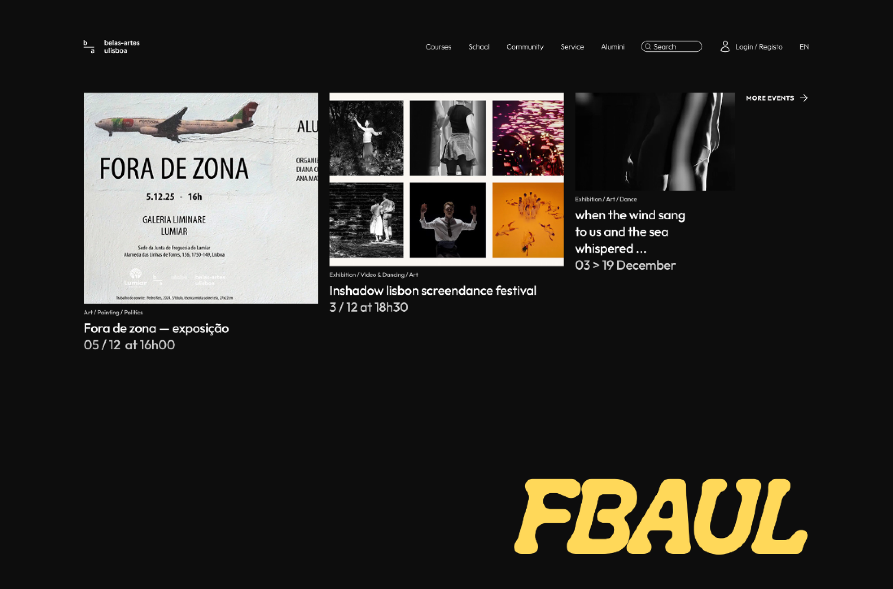

Redo FBAUL website — discovering and designing a solution that effectively addresses students' key needs and frustrations through a user-centered approach.
Public Sector Education Accessibility Digital Transformation